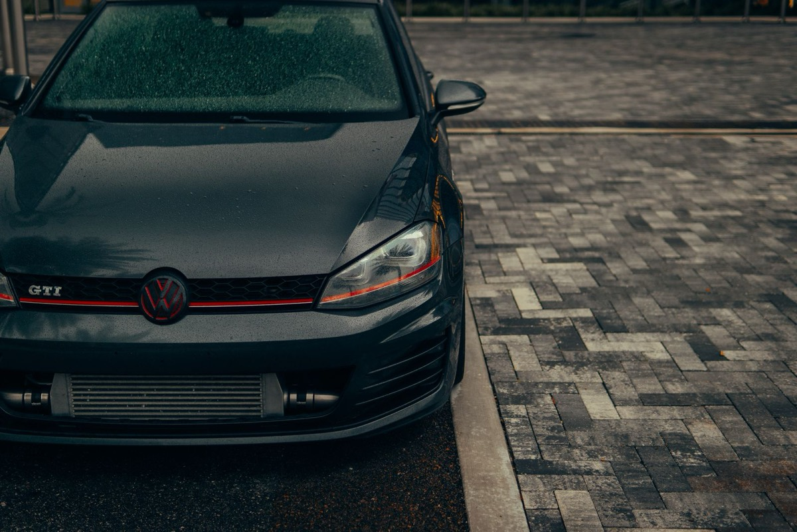
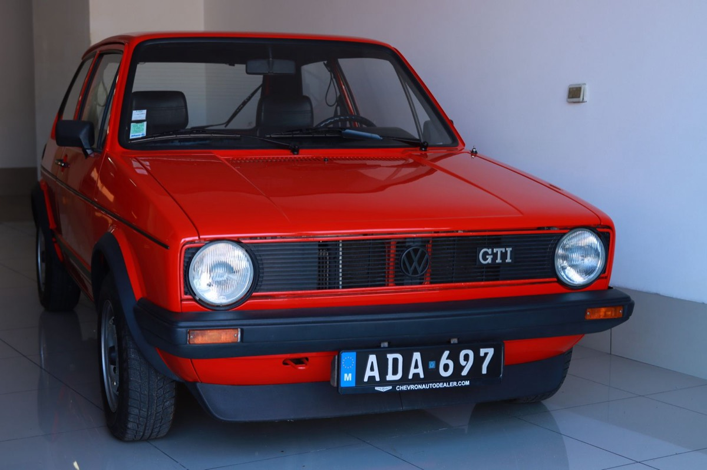

Golf GTI Cat-Back Exhaust: What the Options Cost and Which to Pick
A GTI cat-back exhaust replaces the pipe, resonator and muffler from behind the catalytic converter back to the tips. On a MK7 or MK8 that is the single biggest sound change you can make without touching emissions equipment, and it is the first exhaust purchase most GTI owners make. The GTI is a dif
The MK8 is more expensive at every price point. Its cheapest cat-back is $945.00 against the MK7’s $738.00, and the most-reviewed system in the whole survey is the Borla S-Type (140597) for the MK7 at $1,014.99 with 10 reviews.
The most-reviewed exhaust in the survey is not the most expensive one — it is a mid-priced MK7 system, which tells you where the actual buying is happening on this platform.

A GTI cat-back exhaust replaces the pipe, resonator and muffler from behind the catalytic converter back to the tips. On a MK7 or MK8 that is the single biggest sound change you can make without touching emissions equipment, and it is the first exhaust purchase most GTI owners make.
The GTI is a different problem from a V8 truck, though, and the advice written for trucks does not transfer. The engine is a turbocharged four, so the turbo itself does a large amount of the silencing. The car is also frequently a DSG, which shifts without lifting off the throttle and therefore holds specific RPM bands under load in a way a manual does not. Both of those change what you should buy and what you will regret.
What the cat-back actually changes on this engine
Three parts of the system do three different jobs, and knowing which one you are buying is the entire decision.
The resonator cancels a narrow frequency band. It is a chamber, not a restriction, and removing it is what adds drone at a specific RPM rather than making the car louder everywhere.
The muffler reduces overall volume. Removing or shrinking it makes the car louder across the range.
The pipe diameter and routing change the note and, at the top end only, the flow. On a turbo four the downpipe is the restriction, not the cat-back. That is why cat-back power claims on this platform should be read skeptically: the turbocharger is already the bottleneck, and a 3-inch cat-back behind a factory downpipe does not fix that.
The verified options, priced
These are GTI cat-backs on the MAPerformance catalog, read on 16 November 2026. Fitment splits hard by generation, so this is five shopping lists, not one range. The catalog is deep — the “gti catback” search returns over a thousand indexed results — so what follows is a selection, not the whole catalog: every generation’s cheapest system, plus the well-reviewed options at each price step.
MK5 (2005–2009) — the cheapest GTI exhaust anywhere in this catalog:
| System | Fitment | Price |
|---|---|---|
| Invidia Q300 cat-back | 05–08 GTI | from $386.40 (35% off) |
| XForce 3-inch cat-back | 05–09 GTI | $629.10 (was $699.00) |
| Borla S-Type cat-back | 06–09 GTI 2.0L | $1,129.99 (was $1,265.99) |
MK6 (2009–2014):
| System | Price | Reviews |
|---|---|---|
| Cobb Tuning cat-back | $743.75 (was $875.00) | 5 |
| Borla cat-back | $954.99 (was $1,068.99) | — |
| XForce 3-inch stainless | $990.00 (was $1,100.00) | — |
| AWE Tuning performance exhaust | $1,075.00 (was $1,131.58) | 3 |
| Magnaflow cat-back | $1,114.00 | — |
| APR stainless cat-back | $1,303.95 (was $1,631.95) | — |
MK7 (2015–2017):
| System | Price | Reviews |
|---|---|---|
| Ultimate Racing 3-inch dual exit | from $738.00 | 8 |
| MAPerformance cat-back | from $799.99 | 8 |
| Cobb cat-back | $833.00 (was $980.00) | 5 |
| AWE Track Edition | from $945.00 | 7 |
| Borla S-Type (140597) | $1,014.99 (was $1,136.99) | 10 |
| AWE Touring Edition | from $1,095.00 | 1 |
| Magnaflow cat-back | $1,098.00 | — |
| Borla S-Type (140750) | from $1,213.99 | 3 |
| APR 3-inch (CBK0001) | $1,303.95 (was $1,631.95) | 2 |
| Cobb titanium | $1,394.00 (was $1,640.00) | — |
| APR 3-inch with front muffler | $1,483.95–$1,528.95 | — |
MK7.5 (2018–2021):
| System | Price | Reviews |
|---|---|---|
| Cobb cat-back | $833.00 (was $980.00) | 2 |
| AWE Track | from $945.00 | — |
| AWE Touring | from $1,095.00 | — |
| Borla S-Type (140751) | $1,178.99 (was $1,319.99) | — |
| APR Tuning (CBK0038) | $1,303.95 (was $1,631.95) | — |
| APR 3-inch (CBK0006) | $1,348.95 (was $1,687.95) | — |
| Cobb titanium | $1,394.00 (was $1,640.00) | — |
MK8 (2022 and newer):
| System | Price | Reviews |
|---|---|---|
| XForce cat-back | $945.00 (was $1,050.00) | — |
| MBRP stainless 3-inch, dual split exit | from $964.99 (19% off) | — |
| XForce cat-back with Varex mufflers | $1,255.50 (was $1,395.00) | — |
| Cobb titanium (5V4160) | $1,394.00 (was $1,640.00) | — |
| aFe Power Gemini XV 3-inch | from $1,684.00 | — |
Three things fall out of reading all five tables together.
The cheapest GTI exhaust is on the oldest car. The $386.40 Invidia Q300 for the MK5 is less than half the MK7’s floor and a quarter of the MK8’s. That is not a quality statement — it is that the aftermarket prices a Mk5 part for what a Mk5 is worth.
Within one generation the spread is enormous. On the MK7 you can spend $738.00 or $1,528.95 for systems that both bolt to the same car. The $791 difference buys materials, valving, tip finish and a brand — not a different amount of pipe.
The MK8 is more expensive at every level. Its floor is $945.00 against the MK7’s $738.00, and its ceiling is $1,684.00. If you are shopping for a Mk8, budget higher than the numbers you will find in threads about Mk7s.
About that $386 system
The cheapest GTI cat-back in the catalog is the Invidia Q300 at $386.40, and it only fits a 2005–2008 car. If you are shopping for anything newer, your floor is the generation-specific one in the tables above, and the honest advice is to ignore the $386 number entirely rather than treat it as the category entry price.
For an MK7 the realistic floor is $738.00 (Ultimate Racing) or $799.99 (MAPerformance). Both carry the same 8 reviews, so there is no evidence either way on quality at that price — which means the decision is about which one sounds like what you want.
See the GTI cat-back listings → prices and review counts checked 16 Nov 2026

Axle-back: the option worth considering first
A cat-back replaces everything. An axle-back replaces only the rear muffler and tips, behind the axle. It costs materially less because there is far less pipe and one fewer section, it installs with fewer joints, and it leaves the factory resonator in place, which is the part that suppresses drone.
On a GTI specifically, an axle-back is often the better first purchase. The factory resonator stays, so highway drone stays manageable, and you get most of the sound change because the muffler is the largest single contributor to volume.
The trade is that an axle-back will not change the note as much. If what you want is a different character rather than more volume, the cat-back is doing the work the axle-back cannot.
Drone, and why the DSG matters
This is the part the truck guides cannot tell you.
Drone is a resonance at a specific RPM band, not general loudness. On a GTI with a DSG gearbox, the car upshifts early and holds low revs under light throttle, and it does so without the torque-converter slip that would vary the engine speed. That means at a steady 70–75 mph the engine sits at a fixed RPM, and if a cat-back’s resonance lands there, you will hear it continuously on every highway trip.
A manual driver can shift around it. A DSG driver largely cannot, because the gearbox is choosing.
So the question to ask before buying is not “how loud is it.” It is “what does it sound like at 2,200 rpm at part throttle, held.” Manufacturer sound clips are almost always recorded at wide-open throttle, which is the one condition where drone does not show up. This guide will not quote a drone RPM for any system, because no listing publishes one and the number differs per system and per gearbox.
Does a cat-back need a tune on a GTI?
No. A cat-back sits downstream of the turbo and the catalytic converter and does not change what the engine’s computer is measuring, so it needs no calibration change.
A downpipe is the opposite. It replaces the factory downpipe and, on most systems, the factory converter with it, which is where both the power and the legal exposure live. On the same catalog the GTI’s closest equivalent part, the MAP downpipe for the WRX, carries 279 reviews — the highest of anything in this category — which tells you where the real demand on turbo cars is. But a downpipe is a different purchase with a different set of rules, and the CARB question applies to it in a way it does not apply to a cat-back.
If you are in California
A cat-back is generally the safe exhaust purchase because it leaves the catalytic converter in place. A downpipe that removes or replaces the factory converter is not, and the distinction matters more than most buyers expect.
For any intake, exhaust or tuner part that touches emissions equipment, check whether it carries a CARB Executive Order number before you buy. A part with no CARB EO number is not legal for use in California and will fail the visual portion of a smog inspection, regardless of whether it passes the tailpipe test. This applies to downpipes and to many “test pipe” or decat products. It does not normally apply to a cat-back.
For the noise side, Cal. Veh. Code § 27151 prohibits modifying an exhaust so the vehicle exceeds the noise limit for its type and sets a 95 dB(A) safe harbor for vehicles under 6,000 pounds GVWR, with nonoriginal equipment counted as part of the system.
Which one to buy
Axle-back if you want more sound without changing the character, and you do a lot of highway driving with a DSG. It is the lower-risk purchase and the cheaper one.
MK7: the Ultimate Racing cat-back at $738.00 if you want the full change at the lowest verified price for that car and you can live with the character it produces. The Borla S-Type at $1,014.99 is the one to look at if you want a system with the most owner feedback — it carries 10 reviews, the highest of any GTI cat-back here.
MK8: the XForce cat-back at $945.00 if you have a 2022 or newer car and want the cheapest verified system. Step up to the valved XForce at $1,255.50 if you want to be able to close the flap for early-morning starts or long highway runs — that is the feature the extra $310 buys, and on a DSG it is the feature that matters.
Nothing yet if you have not driven the car with a cat-back fitted. The drone question is answered by a passenger seat at 70 mph, not by a sound clip.
Frequently asked questions
What does a GTI cat-back replace?
The piping, resonator and muffler from behind the catalytic converter back to the tips. The catalytic converter stays, which is why a cat-back does not usually raise a CARB question.
How much should a GTI cat-back cost?
It depends almost entirely on which generation you own. Verified on 16 November 2026: MK5 from $386.40, MK6 from $743.75, MK7 from $738.00, MK7.5 from $833.00, MK8 from $945.00. The dearest system on the catalog is $1,684.00.
Is a cat-back louder than an axle-back?
Yes. A cat-back changes the resonator as well as the muffler; an axle-back changes only the rear muffler and tips. The resonator is the part that suppresses drone, so a cat-back is louder and more likely to drone at cruise.
Will a cat-back drone on a DSG?
It is more likely than on a manual, because the gearbox holds a fixed low RPM at cruise. Pick a system that keeps the factory resonator, or one with a valve you can close, if you drive the highway often.
Do you need a tune after a GTI cat-back?
No. A cat-back is downstream of everything the engine computer measures. A downpipe does need calibration, and usually carries CARB implications a cat-back does not.
Does a cat-back add power?
Not meaningfully on this engine. The turbocharger and the downpipe are the restrictions on a turbo four, not the section behind them. This guide does not quote a power figure for any system here.
Sources
Prices, fitment, manufacturer part numbers, review counts and sale prices read from MAPerformance’s GTI cat-back listing on 16 November 2026. The search reports 1,002 indexed results across 21 pages; every price in the tables above was read off that listing on that date. The WRX downpipe review count (279) comes from the WRX exhaust search, 88 results, same date.
Statutory text from Cal. Veh. Code § 27151, read on 16 November 2026. CARB Executive Order requirements are stated as a rule; no specific EO number is cited for any part in this article, and no part here is claimed to carry one.
Topics
- Exhaust